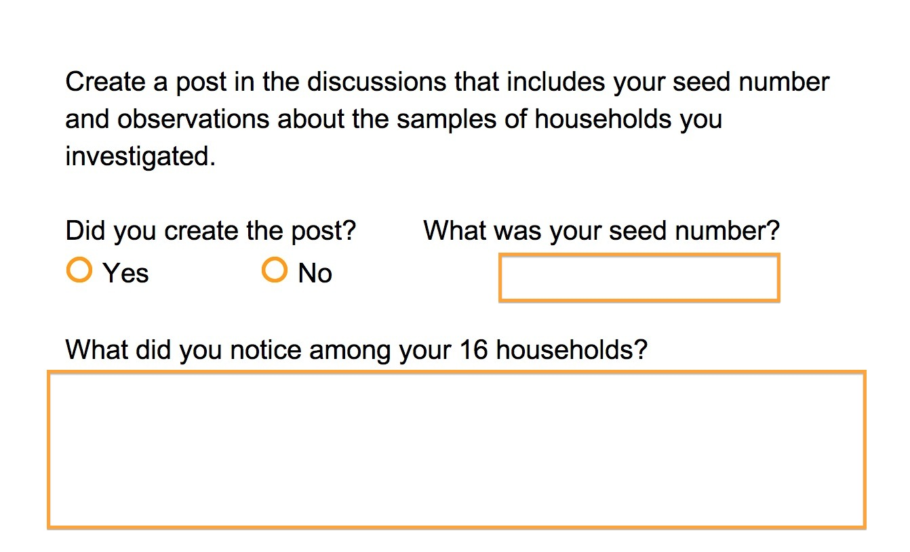

22. 查看家庭样本
查看家庭样本
Question:
Start Quiz:

INSTRUCTOR NOTE:
注意：
x %in% y
返回一个长度与 x 相同的逻辑（布尔）向量，该向量指出 x 中的每一个条目是否都出现在 y 中。也就是说，对于 x 中的每一个条目，该向量都会检查这一条目是否也出现在 y 中。
这样，我们就能将数据子集化，从而获得样本中住户的所有购买时机了。然后，我们通过样本 ID 创建价格与时间的散点图和分面。
在绘制散点时，使用 pch 或 shape 参数来指定符号。向下滚动至 QuickR 图形参数 的“绘制散点”部分。